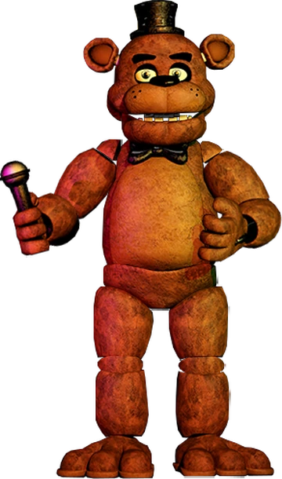

Guia completo dos jogos da franquia Five Nights at Freddy's
Five Nights at Freddy's
Personagens
Freddy Fazbear
É o principal personagem de Five Nights at Freddy's. Ele é um urso animatrônico criado por Henry Emily.
Como lidar
Ele ira iniciar a noite na camera 1A e ira fazer o caminho para o seu escritorio, passando pelas outras cameras enquanto pode ser meramente visto nas mesmas.
Ele te aborda pela porta direita e nunca volta atras no seu caminho, ou seja uma vez que ele chega em sua porta ele não sai mais ate o fim da noite, ou ate te matar. Porém enquanto você estiver com a camera nele, ele não será capaz de se mover. Isso é aplicado mesmo com o monitor fechado, use isso para sua vantagem e o mantenha paralizado.
Bonnie
É o guitarrista da banda, um coelho também feito por Henry. Este animatronico é considerado o mais assustador do jogo, por fãs pois o criador da franquia, Scott Catota mencionou em um de seus posts que bonnie tirava o sono dele e que constantemente tinha pesadelos com o robô que ele mesmo havia criado.
É o animatronico mais agressivo do jogo, sempre tendo oportunidades de movimentos mais constantes que Freddy e Chica, logo tem a chance de te atacar mais vezes durante qualquer noite.
Como lidar
Assim como Freddy, ele ira iniciar na camera 1A e ira fazer o caminho em sua direção para comer o seu bum bum, atacando pelo lado esquerdo. Para evitar a chegada dele no seu escritorio você deve monitorá-lo pelas cameras e fechar a porta quando o tal aparecer atras da mesma.
Chica
A vocalista secundaria do grupo, há diversas discussoes sobre ela ser um pato ou uma galinha devido a aparencia bipolar. Porém foi confirmado e também se pode julgar pelo nome Chica que vem de Chicken, que ela é de fato uma galinha.
Tem uma forte competição com bonnie quando o assunto é ser assustador. Chica ao mesmo tempo que foi a favorita de muitos, foi a que mais aterrorizava pessoas de coração fraco.